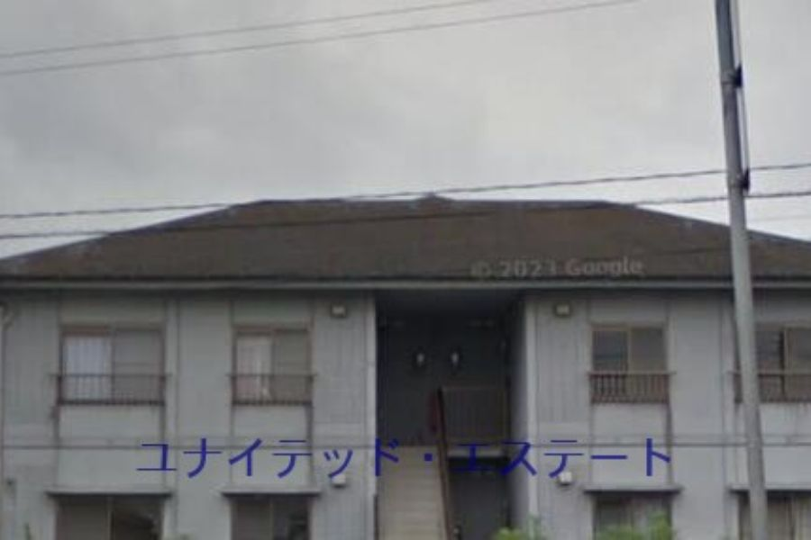
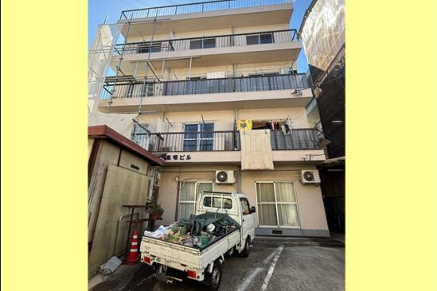
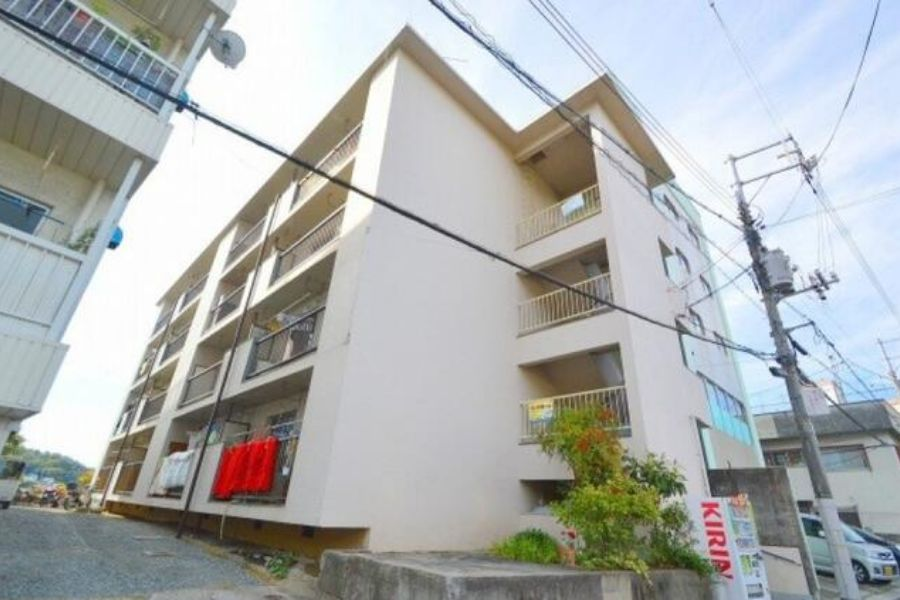

山口県下関市吉見新町二丁目15-21

山口県宇部市大字東須恵918-59

山口県山口市小郡本町2丁目874-1

山口県長門市東深川2239-3

徳島県徳島市昭和町七丁目10-2
| 印 | 写真 | 物件名/所在地 | 価格 | 利回り | 築年月 | 構造 | 戸数 | 土地面積 | 建物面積 | 積算概算 | 積算比率 |
|---|---|---|---|---|---|---|---|---|---|---|---|
| 継続 | |
マリンコート吉見 山口県下関市吉見新町二丁目15-21 |
5,500万円 | 11.06% | 2004年3月／築22年 | RC造2階建 総戸数12戸 | 12戸 | 704.60㎡ | 348.38㎡ | 約5,200万円 | 95% |
| 継続 | |
ホワイトハイツ 山口県宇部市大字東須恵918-59 |
6,860万円 | 11.06% | 1995年1月／築31年 | RC造3階建 総戸数12戸 | 12戸 | 1,213.91㎡ | 711.90㎡ | 約7,688万円 | 112% |
| 継続 | |
山口市 平成8年築 RC造一棟マンション 山口県山口市小郡本町2丁目874-1 |
5,980万円 | 11.53% | 1996年2月／築30年 | RC造5階建 総戸数9戸 （うち住戸以外 1戸） | 9戸 | 355.21㎡ | 565.55㎡ | 約6,276万円 | 105% |
| 継続 |  |
インペリアルミトA・B棟 山口県長門市東深川2239-3 |
4,300万円 | 12.37% | 1993年3月／築33年 | RC造2階建 総戸数8戸 | 8戸 | 1,063.75㎡ | 273.02㎡ | 約3,860万円 | 90% |
| 継続 | |
シャトル昭和町 徳島県徳島市昭和町七丁目10-2 |
7,000万円 | 12.06% | 1994年3月／築32年 | RC造4階建 総戸数24戸 | 24戸 | 383.60㎡ | 569.64㎡ | 約6,724万円 | 96% |
| 印 | 写真 | 物件名/所在地 | 価格 | 利回り | 築年月 | 構造 | 戸数 | 土地面積 | 建物面積 | 実勢価格 | 実勢価格比 |
|---|---|---|---|---|---|---|---|---|---|---|---|
| 継続 |  |
岡山県倉敷市 一棟RCマンション 4棟一括 岡山県倉敷市児島唐琴2丁目3-23 |
577万円 | 51.5% | 1971年7月／築55年 | RC造2階建 総戸数14戸 | 14戸 | 1,308.00㎡ | 679.04㎡ | 約3,459万円 | 約16.7% |
| 継続 |  |
鳥取県米子市 一棟コンクリートブロ 鳥取県米子市祇園町2丁目169-1 |
400万円 | 49.8% | 1970年7月／築56年 | ブロック2階建 総戸数6戸 | 6戸 | 302.05㎡ | 200.78㎡ | 約1,782万円 | 約22.4% |
| 継続 |  |
高知県須崎市 一棟アパート 高知県須崎市下分甲 |
454万円 | 142.7% | 1974年7月／築52年 | ブロック2階建 総戸数22戸 | 22戸 | 583.24㎡ | 608.80㎡ | 約1,471万円 | 約30.9% |
| 継続 |  |
徳島サンハイツ 徳島県小松島市中郷町字西野1-21 |
27,000万円 | 46.68% | 1974年11月／築51年 | RC造12階建 総戸数300戸 | 300戸 | 20,395.09㎡ | 16,607.02㎡ | 約86,339万円 | 約31.3% |
| 継続 |  |
岡山県倉敷市 一棟売りアパート 岡山県倉敷市玉島長尾 |
1,000万円 | 30.96% | 1974年1月／築52年 | S造2階建 総戸数8戸 | 8戸 | 452.72㎡ | 274.34㎡ | 約2,958万円 | 約33.8% |
| 継続 |  |
デュウオコート西平塚 広島県広島市中区西平塚町8番18号 |
11,000万円 | 8.1% | 1980年4月／築46年 | RC造5階建 総戸数17戸 （うち住戸以外 1戸） | 17戸 | 130.11㎡ | 456.32㎡ | 約25,877万円 | 約42.5% |
| 継続 |  |
愛媛県松山市 一棟売りマンション 愛媛県松山市樽味 |
5,500万円 | 26.89% | 1985年3月／築41年 | RC造4階建 総戸数32戸 （うち住戸以外 8戸） | 32戸 | 639.36㎡ | 897.44㎡ | 約12,858万円 | 約42.8% |
| 継続 |  |
広島県三次市 一棟RCマンション 広島県三次市南畑敷町 |
3,300万円 | 36.0% | 1975年8月／築51年 | RC造4階建 総戸数18戸 | 18戸 | 2,106.00㎡ | 1,206.35㎡ | 約6,763万円 | 約48.8% |
| 継続 |  |
山口県宇部市 一棟S造アパート 山口県宇部市西梶返2丁目20 |
1,500万円 | 21.6% | 1971年5月／築55年 | S造2階建 総戸数10戸 | 10戸 | 838.87㎡ | 486.00㎡ | 約3,048万円 | 約49.2% |
| 継続 |  |
山口市 1棟AP 山口県山口市平井 |
1,860万円 | 15.93% | 1988年5月／築38年 | RC造2階建 総戸数10戸 | 10戸 | 649.71㎡ | 213.74㎡ | 約3,516万円 | 約52.9% |
| 継続 |  |
藤ライフ 岡山県倉敷市西富井1270-2 |
4,280万円 | 10.1% | 1985年12月／築40年 | RC造2階建 総戸数6戸 | 6戸 | 801.99㎡ | 247.86㎡ | 約7,904万円 | 約54.1% |
| 継続 | 東和マンション 山口県周南市花陽 |
800万円 | 18.6% | 1979年1月／築47年 | RC造2階建 総戸数4戸 | 4戸 | 198.30㎡ | 158.00㎡ | 約1,404万円 | 約57.0% | |
| 継続 |  |
広島県廿日市 一棟アパート 広島県廿日市市宮内1丁目3番34号 |
14,900万円 | 6.33% | 1995年2月／築31年 | S造2階建 総戸数16戸 | 16戸 | 1,309.03㎡ | 608.56㎡ | 約25,744万円 | 約57.9% |
| 継続 |  |
ウエストコーポ＋貸家 山口県岩国市錦見7丁目2-25 |
2,550万円 | 11.2% | 1988年2月／築38年 | S造2階建 総戸数5戸 | 5戸 | 515.80㎡ | 210.52㎡ | 約4,109万円 | 約62.1% |
| 継続 |  |
東富田コーポ 徳島県徳島市かちどき橋3丁目56 |
6,500万円 | 11.07% | 1981年7月／築45年 | RC造3階建 総戸数15戸 | 15戸 | 816.85㎡ | 816.00㎡ | 約10,347万円 | 約62.8% |
| 継続 |  |
メゾン・ドゥ・コリーヌＡ、Ｂ 岡山県岡山市中区海吉2226-1 |
6,900万円 | 13.76% | 1996年9月／築30年 | S造2階建 総戸数16戸 | 16戸 | 1,790.02㎡ | 746.96㎡ | 約10,919万円 | 約63.2% |
| 継続 |  |
ダン・デ・リオン1、2、3 岡山県岡山市北区万成西町9-5-2 |
10,000万円 | 10.59% | 1998年3月／築28年 | RC造2階建 総戸数10戸 | 10戸 | 1,274.98㎡ | 240.84㎡ | 約15,725万円 | 約63.6% |
| 継続 |  |
岡山県岡山市中区 一棟売りマンション 岡山県岡山市中区東山 |
5,500万円 | 11.8% | 1991年1月／築35年 | RC造3階建 総戸数12戸 | 12戸 | 617.93㎡ | 514.41㎡ | 約8,445万円 | 約65.1% |
| 継続 |  |
愛媛県今治市 一棟アパート 愛媛県今治市東村 |
1,300万円 | 20.95% | 1985年9月／築41年 | S造2階建 総戸数6戸 | 6戸 | 462.80㎡ | 232.52㎡ | 約1,990万円 | 約65.3% |
| 継続 |  |
愛媛県松山市 一棟売りアパート 愛媛県松山市高砂町1丁目 |
2,300万円 | 14.11% | 1979年4月／築47年 | SRC造3階建 総戸数15戸 | 15戸 | 186.04㎡ | 395.82㎡ | 約3,514万円 | 約65.5% |
| 継続 | レトロプラス宮脇町 香川県高松市宮脇町二丁目 |
2,100万円 | 20.02% | 1972年12月／築53年 | ブロック造4階建 総戸数7戸 | 7戸 | 247.83㎡ | 294.48㎡ | 約3,057万円 | 約68.7% | |
| NEW |  |
高畑ビル 広島県広島市南区丹那町 |
2,600万円 | 20.35% | 1973年4月／築53年 | S造4階建 総戸数11戸 | 11戸 | 201.65㎡ | 381.67㎡ | 約3,742万円 | 約69.5% |
| 継続 | 徳島県徳島市 一棟売りマンション 徳島県徳島市中島田4丁目 |
2,600万円 | 22.27% | 1975年11月／築50年 | RC造3階建 総戸数12戸 | 12戸 | 640.30㎡ | 542.16㎡ | 約3,735万円 | 約69.6% | |
| 継続 |  |
シャトー津島 岡山県岡山市北区津島西坂二丁目3-51 |
7,500万円 | 12.29% | 1987年2月／築39年 | S造2階建 総戸数18戸 | 18戸 | 547.01㎡ | 344.16㎡ | 約10,576万円 | 約70.9% |
| 継続 |  |
愛媛県松山市 一棟 愛媛県松山市保免中2丁目5 |
4,600万円 | 13.35% | 1966年1月／築60年 | RC造3階建 総戸数10戸 （うち住戸以外 8戸） | 10戸 | 621.43㎡ | 567.06㎡ | 約6,463万円 | 約71.2% |
| 継続 |  |
マツダビル 広島県広島市南区向洋本町19-31 |
5,000万円 | 15.14% | 1972年11月／築53年 | RC造4階建 総戸数16戸 | 16戸 | 381.28㎡ | 604.60㎡ | 約6,736万円 | 約74.2% |
| 継続 |  |
【グレース古江】 広島市西区古江東町 一棟マンション 広島県広島市西区古江東町 |
10,300万円 | 6.61% | 1988年9月／築38年 | RC造4階建 総戸数8戸 | 8戸 | 459.40㎡ | 459.10㎡ | 約13,782万円 | 約74.7% |
枠Aの条件にほぼ合致しながら、いずれか1点の条件のみが外れたため掲載を見送った物件です。
| 写真 | 物件名/所在地 | 価格 | 利回り | 築年月 | 構造 | 戸数 | 土地面積 | 積算概算 | 外れた条件 |
|---|---|---|---|---|---|---|---|---|---|
 |
カレッジ三共パート1・2（二棟一括） 香川県さぬき市志度1843-1 |
7,880万円 | 17.81% | 1992年6月／築築34年 | RC造3階建 総戸数54戸 | 54戸 | 2,359.94㎡ | 約12,626万円 | 築年数 築34年 （33年超） |
 |
香川県一棟マンション 香川県仲多度郡多度津町京町 |
6,800万円 | 13.59% | 1992年5月／築築34年 | RC造4階建 総戸数14戸 | 14戸 | 796.98㎡ | 約7,376万円 | 築年数 築34年 （33年超） |
 |
広島市安佐北区可部東2丁目 一棟マンション 広島県広島市安佐北区可部東2丁目 |
6,200万円 | 11.01% | 1991年4月／築築35年 | RC造4階建 総戸数19戸 | 19戸 | 191.14㎡ | 約3,279万円 | 築年数 築35年 （33年超） |
積算評価は価格の約95%で、積算面からの評価も含めてご検討いただける水準です。
現況は賃貸中です。
接道は北東側 幅員約6m / 間口約26m 南西側 幅員約4m / 26m。詳細な再建築の可否は要確認です。